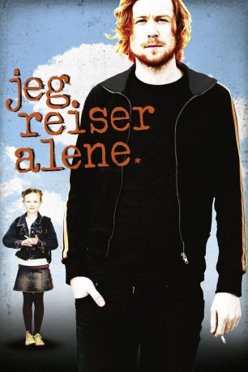

#6515 Jarle Klepp 2 - Ich reise allein
 
 IMDB-Wertung: 6.5 / 10
IMDB-Wertung: 6.5 / 10  Metascore: 0
Metascore: 0 
Jarle Klepp ist ein 25-jähriger Literaturstudent mit einer Leidenschaft für Adorno, Proust und erwachsene Frauen - und definitiv nicht Tamagochis, Lady Di und kleine Kinder. Die Nachricht, dass er der Vater eines sieben Jahre alten Mädchens ist - und dass sie ihn nächste Woche besuchen wird - tritt in sein Leben wie eine Atombombe. Jarle Klepp muss erwachsen werden. Ist er fähig, erwachsen zu werden? Will er erwachsen werden?
Jahr: 2011
Dauer: 90 Minuten
FSK: 0
Land: Norwegen Studio: Neue Visionen FilmverleihTonspuren: DD5.1 - ,
Untertitel: Englisch,
Auflösung: 1080p (1920x800) Größe: 7004 MB
Genre: Drama
Regisseur: Stian Kristiansen
Drehbuch: Tore Renberg
Soundtrack:
Darsteller:
- Rolf Kristian Larsen als Jarle Klepp
 Pål Sverre Hagen als Hasse Ognatun
Pål Sverre Hagen als Hasse Ognatun Ingrid Bolsø Berdal als Herdis Snartemo
Ingrid Bolsø Berdal als Herdis Snartemo- Gustaf Hammarsten als Robert Göteborg
- Ine Marie Wilmann als Liv-Tone
- Prince Charles als Himself , archive footage, uncredited
- Amina Eleonora Bergrem als Charlotte Isabel Hansen
- Trine Wiggen als Sara Klepp
- Marte Aarseth als Anette Hansen
- Marko Iversen Kanic als Arild Bømlo
- Henriette Steenstrup als Grete Strandebarm
- Trond-Viggo Torgersen als Legen
- Bjørg Spigseth als Rullekakedame
- Ina Therese Lerner Grevstad als Flyvertinne
- Sander Rønbeck als Daniel
- Grethe Selius als Dame på buss
- Raul Cepeda als Hernan
- Ester Marie Grenersen als Hilde
- Ingvild Holthe Bygdnes als Borgny
- Loekke Calle als Buss passasjer
- Emilie Houge als Anette Hansen , archive footage
 Arthur Berning als Helge Ombo , archive footage, uncredited
Arthur Berning als Helge Ombo , archive footage, uncredited
Datei: X:\3-Trilogie(G-M)\Jarle Klepp\Jarle Klepp 2 - Ich reise allein (2011, FSK0, 1920x800).mkv seit 05.07.2017
Festplatte: HD Collection-2(A-Z)-3(A-M)
 Alle Filme aus Gruppe '3-Trilogie(G-M)\Jarle Klepp'
Alle Filme aus Gruppe '3-Trilogie(G-M)\Jarle Klepp'